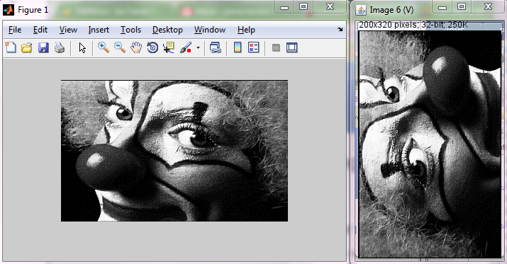
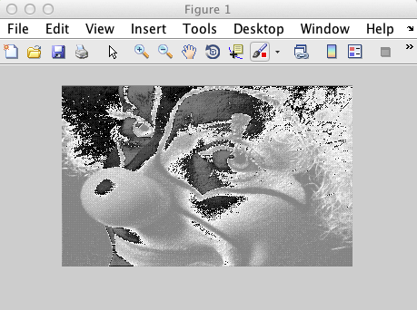

Creating Imglib2 images in MATLAB
This page recenses experiments with creating ImgLib2 images from MATLAB, and then calling ImgLib2 algorithm from MATLAB. We aim first at showing how to build ImgLib2 types from MATLAB types, then to do that efficiently. By this we mean having to share a single, massive low level data piece between ImgLib2 and MATLAB, which is not doable simply due to MATLAB memory model.
All snippets listed here are to be run from MATLAB. We rely on Miji to set up class path, so you have to start every MATLAB session with the command
Miji(false)Creating a new ImgLib2 image in MATLAB
In MATLAB, we are limited to native type images (float, uint8, uint16, …) represented as native arrays. The matching ImgLib2 container for this is the {% include github repo=‘imglib’ branch=‘master’ path=‘core/src/main/java/net/imglib2/img/array/ArrayImg.java’ label=‘ArrayImg’ %}.
Because ImgLib2 authors wrote nice static utilities, our work is relatively easy. The class ArrayImgs has all the methods you need, one per native type.
>> load clown
>> img = net.imglib2.img.array.ArrayImgs.doubles(X(:), size(X));
>> net.imglib2.img.display.imagej.ImageJFunctions.show(img); % ImageJ display
>> imshow(X,[]) % [[MATLAB]] display
We note that the ImageJ display is rotated and flipped regarding the MATLAB image. This is because MATLAB arrays are expected to be arranged along columns, whereas Java arrays are arranged along lines. We would need to permute dimension 0 and dimension 1 to display the data in ImageJ as expected in MATLAB.
Note also that the raw data was cast from 64-bit double data to 32-bit float for display. But the source img has the expected type.
MATLAB to ImgLib2 bridge functions
The exacts method in ArrayImgs depend on the native type you want to use, so you would have to deal with all possible cases. But there is already some MATLAB functions in Fiji that does that in the scripts folder of your Fiji installation: {% include github repo=‘fiji’ branch=‘master’ path=‘scripts/copytoImg.m’ label=‘copytoImg’ %} and {% include github repo=‘fiji’ branch=‘master’ path=‘scripts/copytoImgPlus.m’ label=‘copytoImgPlus’ %}. You need therefore to add scripts to your MATLAB path, but this is most likely already done since it also contains Miji which you need to call already.
The first function generates a plain Img. The second one generates and ImgPlus which allows you specifying the spatial calibration, image name and axis types. Check the help of these functions for details.
Example usage
Let’s put ImgLib2 to work to filter a source image using anisotropic diffusion:
load clown
Miji(false);
img = copytoImg(X);
for i = 1 : 10 % do it 10 times, in place
net.imglib2.algorithm.pde.PeronaMalikAnisotropicDiffusion.inFloatInPlace(img, 0.15, 10);
end
net.imglib2.img.display.imagej.ImageJFunctions.show(img);Retrieving the content of an ImgLib2 image in MATLAB
Now we want to get the result back in MATLAB. Since we are using ArrayImg, we can always access the underlying java primitive array that the Img wraps, but we still have to keep in mind the X and Y dimension permutation. Also: the wrapped array is a 1D, very long array, that can be looked upon as the row-by-row concatenation of the image content. We have to reshape it in MATLAB to give the image back its aspect:
% Retrieve a copy (see below) of the java primitive array
>> I = img.update([]).getCurrentStorageArray;
% Reshape it to match the initial aspect. Careful, we need to remember we permuted X & Y.
>> J = reshape(I, size(X')); % X' not X
% Display it with X & Y permuted
>> imshow(J', [])This is all and nice and worked as expected. But it worked because we were using doubles for this image. Let’s try with a more memory-saving type. First, let’s create a uint8 image from a MATLAB array of this type:
>> clear
>> load clown
>> Y = ind2gray(X, map);
>> Z = uint8(255*Y);
>> imshow(Z)
>> img = copytoImg(Z);
>> net.imglib2.img.display.imagej.ImageJFunctions.show(img);This just builds an acceptable MATLAB uint8 image and a UnsignedByteType ImgLib2 image. Let’s suppose we modified this image, keeping its type, and want to retrieve the content in MATLAB. We do just like before:
>> I = img.update([]).getCurrentStorageArray;
>> J = reshape(I, size(X')); % X' not X
>> imshow(J', [])
What happened here? The gray levels are all messed up. Checking the class of the returned array gives a clue:
>> class(J)
ans =
int8Aha! So we gave to ImgLib2 an uint8 array, but it gives us back an int8 array, with all values wrapped. This is actually something that should have been expected: There is no unsigned byte type in Java, only signed byte type. This is a language design choice we could discuss for hours, but in Java there just isn’t uint8 or uint16[^1].
ImgLib2 developers managed to deal with it elegantly. Since the library can abstract about everything, having an image type which is not directly backed up by an existing primitive type is not a problem. The uint8 is represented internally by something Java can handle, and ImgLib2 makes sure the unsigned byte type arithmetics are respected whenever the image content is retrieved or display.
But when we call the getCurrentStorageArray method, we retrieve this internal representation, and it just happens that it is of type int8, that is signed byte. The values are a bit mixed, since int8 ranges from -128 to 127, while uint8 range from 0 to 255. MATLAB has a built-in function to put it back right:
>> I = img.update([]).getCurrentStorageArray;
>> J = typecast(I, 'uint8');
>> K = reshape(J, size(X'));
>> imshow(K')But of course, there is a MATLAB function that does all of this for you, and that you can also find in the scripts folder of your Fiji installation: {% include github repo=‘fiji’ branch=‘master’ path=‘scripts/copytoMatlab.m’ label=‘copytoMatlab’ %}.
Using Java arrays in MATLAB
A first attempt to solve this would be to try and use Java arrays in MATLAB, which is made possible by the function javaArray. As explained in the [MATLAB docs, you can use this function to instantiate proper Java arrays, which we could then use to create an ImgLib2 image, and play with the same data both on the MATLAB side and on the ImgLib2 side.
But this would unsatisfactory as well. The javaArray function allows the creation of Java objects, but not of primitive types. As suggested on the MATLAB docs, and noted here:
MATLAB can pass Java objects when calling a Java function, and modifications to these objects are afterwards available in MATLAB - except when the Java object is an array of a primitive data type</u>. In this case automatic conversion between [MATLAB](https://imagej.net/scripting/matlab) and Java kicks in, making a Java array-of-primitive-double correspond directly to a double matrix in [MATLAB](https://imagej.net/scripting/matlab) - which is by [MATLAB](https://imagej.net/scripting/matlab) conventions a thing “passed as value” so no return values are possible.
So this means that we could create an array of java.lang.Double[] and use its reference, but we cannot have and manipulate a plain native double[] array without MATLAB shadowing any change because it operates on a copy.
An array of java.lang.Double[] is not acceptable for most of our use cases. We expect to deal sometimes with very large images - the main reason for trying to escape duplicating data in memory - and a Double object adds some overhead on the primitive it wraps we would like to avoid.
As of now (MATLAB 2013a), this answer seems to be definitive: There is no workaround if we are to stay with a native array in MATLAB.
Using ImgLib2 types as primary data holder
Therefore, a solution implies a change of approach. We will not use MATLAB matrices as data holder, but use ImgLib2 structures. We can access the raw data through ImgLib2 facilities (cursor, randomAcess, …). The changes made are then done in place, and will be visible from both ImgLib2 and MATLAB, provided the data is accessed from the ImgLib2 container. We also already saw that ArrayImgs wrap a native array, that we can copy to MATLAB shall we need to quickly get the whole dataset.
With this strategy, MATLAB steps aside a bit, since we use ImgLib2 for basically all data manipulation. It takes the role of a scripting language like Jython, from which you make plain call to Java classes. Duplicating the native array wrapped in an ArrayImg allows you still make the best our of MATLAB easily, but you must design a good tactic in your script to avoid these local copies to exist for too long.
References
[^1] :Check here for the details of unsigned types story.